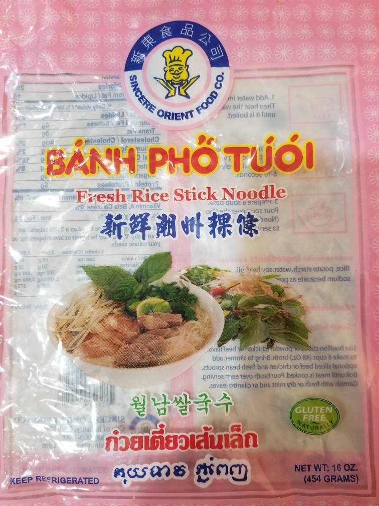

Fresh Rice Stick Noodle (Sincere Orient Food Co.)

- 2020-06-14 - Made according to directions - place in boiling water 5 - 10 seconds, then set aside. Add soup on top when ready to serve. Texture and taste good, discarded boiling water and left noodles without rinsing around 10 minutes before serving.